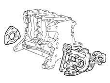
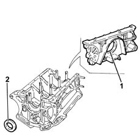
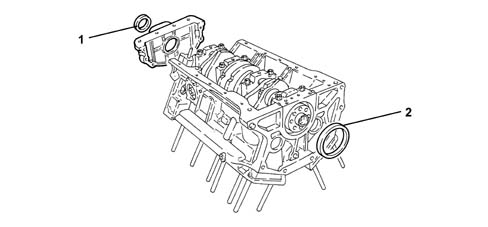
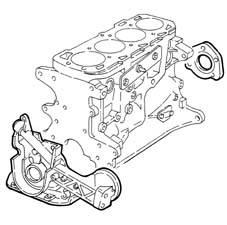
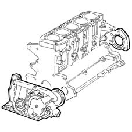
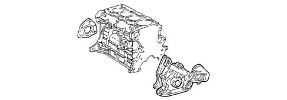

1020D oil seals on crank shaft
- Path
- Descriptions > 10 ENGINE > 1020 CRANKCASE SUMP AND COVERS > 1020D oil seals on crank shaft
- Kind
- system description
- Applies to
- all engines; all production periods
- Interactive page
- https://sloeber94.github.io/elrnDB-a156/en/#/3232823
Applies to: engines: 1.6 TS , 1.8 TS; all production periods
The crankshaft front seal is produced by an oil seal fitted on the front cover (oil pump casing).
The crankshaft rear seal is produced by an oil seal incorporated in the rear cover.

Applies to: all engines; all production periods
La tenuta anteriore dell'albero motore è realizzata mediante paraolio montato sul coperchio anteriore (corpo pompa olio).
La tenuta posteriore dell'albero motore è realizzata mediante un anello paraolio integrato nel coperchio posteriore.
Applies to: engines: 2.5 V6; all production periods
The crankshaft front seal (1) and rear seal (2) are achieved by oil seals fitted directly on the relevant covers.
The seal between rear main journal cap and crankcase is achieved by gaskets or silicone sealant according to the car version.
To replace the above gaskets, refer to op. 1020D50 crank shaft rear mount - apply silicone to mating surfaces with crank case sump and flywheel removed and op. 1020D51 crank shaft rear mount - apply silicone to mating surfaces

Applies to: engines: 3.2 V6; all production periods
CONSTRUCTION FEATURES
The crankshaft front seal (1) and rear seal (2) are achieved by oil seals fitted directly on the relevant covers.
The seal between rear main journal cap and crankcase is achieved by silicone sealant.

Applies to: engines: 1.9 JTD 8v ; all production periods
The crankshaft front seal is produced by an oil seal fitted on the front cover (oil pump casing).
The crankshaft rear seal is produced by an oil seal incorporated in the rear cover.

Applies to: engines: 2.4 JTD 10v; all production periods
The crankshaft seal and counter-rotating shaft are fitted to the front crankcase cover (oil pump case).
The crankshaft rear seal is achieved by an oil seal incorporated in the rear cover.

Applies to: engines: 2.0 JTS, 2.0 JTS; all production periods
CONSTRUCTION FEATURES
The crankshaft front seal is produced by an oil seal fitted on the front cover (oil pump casing).
The crankshaft rear fluid-tightness is ensured by an oil seal incorporated in the rear cover.

Applies to: engines: 1.9 JTD 16v; all production periods
CONSTRUCTION FEATURES
The crankshaft front fluid-tightness is ensured by an oil seal fitted on the front cover (oil pump casing).
The crankshaft rear fluid-tightness is ensured by an oil seal incorporated in the rear cover.
Applies to: engines: 2.4 JTD 20v; all production periods
COMPONENT DESCRIPTION
CRANKCASE SUMP
Specifcations
Type
The crankshaft front fluid-tightness is ensured by an oil seal fitted on the front cover (oil pump casing).
The crankshaft rear fluid-tightness is ensured by an oil seal incorporated in the rear cover.
Topics linked from this page (2)
- 1020D50 crank shaft rear mount - apply silicone to mating surfaces with crank case sump and flywheel removed
- 1020D51 crank shaft rear mount - apply silicone to mating surfaces